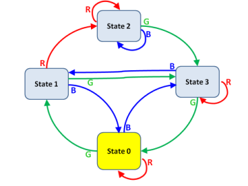
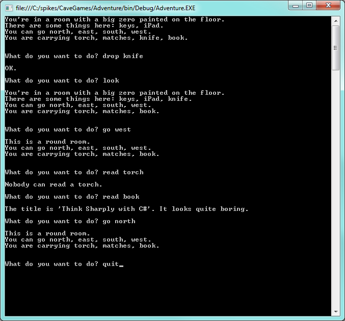
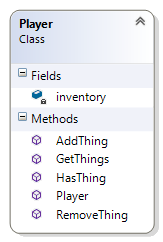
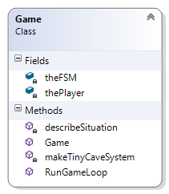

27. In the Caves — a Case Study¶
This case study builds a skeleton of a game using a few more classes that we’ll write ourselves.
It is strongly recommended that this chapter needs to be “hands-on” — get the code copied and running in Visual Studio as you work through the case study.
We’ll stay with the same theme — state machines, state diagrams, and state transitions. This is a very useful formalism in Computer Science, with a wide range of applications. So perhaps it is time to be a little more precise.
Definition of a Finite State Machine (FSM)
An FSM is described by a few components (all finite):
- A set of states that the machine can be in. One of these must be designated as the starting state of the machine. The machine can only be in one of its states at any possible moment.
- A set of possible inputs (or events) to the machine. (We’ll call these FSM events, because we don’t want to confuse them with C# events.)
- A state transition function. For each state that the machine can be in, and for each possible input, this mechanism describes what the next state will be.
- A set of additional actions that can occur.
Actions can be triggered in one of three situations:
- Whenever a particular transition occurs between one state and another,
- Whenever a particular state is entered,
- Whenever a particular state is exited.
Our earlier traffic light FSM can now be described in terms of this definition: It had three states, and only one input. After every transition we arrived in a new state. There were no additional actions (besides state transitions) built into our machine.
As another example, suppose a vending machine needs three coins to buy a chocolate: it might have three cyclic states representing the monetary balance (zero, one, two). When it gets an additional coin in the “two” state it would transition back to “zero” state, but attached to that transition we’d want an additional “dispense chocolate” action.

We’ll typically draw a State Diagram to describe our machines. For example, this state diagram describes a machine with four states, and three possible inputs. The highlighted state is the current state. The transition arrows describe transitions. There are no actions represented in this diagram.
Maps, Caves, and Finite State Machines
A number of games involve being somewhere (i.e. in some state) in a cave that is part of a bigger system of caves, or on an island in a bigger system of islands. We have a limited number of choices (these are the inputs to the FSM) — perhaps doors that we can exit from, or passages in the caves, or directions that we can go, or ships that we can catch — to trigger the transition to the next cave, or the next island.
The four states in our diagram could represent four caves, or four islands, or four stations in an underground tube system. The R/G/B triggers could represent Red, Green, or Blue ships that we could catch to the next island, or exit passages from one cave to another, or platforms where we could catch the next tube train.
For a game, some of the states can contain some treasure, some reward, or some danger. But we don’t want the user to know the “map” of the machine. That would make finding the treasure too easy. So the user needs to explore the possible states and transitions and find the treasure without going around in circles forever.
See http://csunplugged.org/finite-state-automata/ where the finite state machine is presented as a hunt for pirate treasure on some islands.
Our task now: write an “engine” for games like this, and then use our engine to build one or two cave or island games.
The game was inspired by Will Crowther’s original “Colossal Cave Adventure” game — possibly the first ever dungeon game done on a computer. It has a fascinating history, and you can download the original code (or an executable that runs on a PC), or play the game on-line. Prepare to devote a good number of hours to this! http://en.wikipedia.org/wiki/Colossal_Cave_Adventure. Also read the really fascinating page http://rickadams.org/adventure/b_cave.html.
In the spirit of the original game, we’ll do this as a Console Application rather than use WPF. In the original game everything was in upper-case too, (that is all computers could manage then), so take a peek at the very retro-looking screen shot on Wikipedia. We won’t go that far! (Refresher: Section 4.3 shows how to create and use a Console Application.)
Here is a short interaction, showing what we aim to achieve:
When we create our Console Application we’ll get a class called
Program that contains the starting point — a static Main
method. We’ll add just two statements to that class, and write
everything else in our own classes. So let’s begin by changing
the skeleton program like this:
1 2 3 4 5 6 7 8 | class Program
{
static void Main(string[] args)
{
Game g = new Game();
g.RunGameLoop();
}
}
|
Lines 5 and 6 instantiate a new game, and call its RunGameLoop method.
So we now need to add a Game class to our project.
Designing classes is a huge topic in its own right. So we’re not really going to spend too much time here arguing the merits of what classes we need and what responsibilities each should have. Instead, we’ll just present and implement a design. Our approach is based on the advice given earlier: write down a few user stories, identify the nouns, and these often make good candidates to turn into classes of their own.
We’ll introduce four additional classes:
- A
Playerclass. The only responsibility (and state) at this time will be to keep an inventory of things that they are carrying (like the torch, or the keys). - A
Stateclass. This will correspond to a state in our FSM, and will represent a Cave or an Island in the game. It needs a description, and also needs to keep an inventory of things that are in the room. - An
FSMclass, as we had in the last chapter. It implements the map of the game, and is responsible for moving from one state to another. - The
Gameclass, which controls the game. It will do all the interaction with the user via the Console, and will instantiate and “own” the finite state machine object, and the player object. It must “understand” what the user types in, and be the controller for the game. After each change to the state, it must update the view — i.e. give feedback to the user about the new situation.
The one other obvious noun that might qualify for its own class would be the “thing” — torch, iPad, knife, etc. At this stage, things don’t have any behaviour of their own (for example, the torch cannot run out of battery power, and we cannot turn on the iPad), so we will just represent each “thing”” as a string.
27.1. The Player class¶
The class diagram here shows the members that we’ll want
for a player. These diagrams show private and public
members. We are only interested in the public members when
we’re figuring out how this component will interact with other components.
We’re interested in the private members because they tell us about
the state that an object can be in, or private operations it can do.
Recall that the tiny padlock icon next to inventory means “private”.
You’ll also notice that the class diagrams have collapsible sections for the Fields, Properties, Methods and all the detail of the Class. This allows us to choose to view the level of detail and the “mental chunking” that is appropriate for our task.
Let’s implement the player class (we haven’t shown the using directives and
the namespace sections of the code:)
1 2 3 4 5 6 7 8 9 10 11 12 13 14 15 16 17 18 19 20 21 22 23 24 25 26 27 28 29 30 31 32 33 | class Player
{
private List<string> inventory;
public Player(params string[] initialThings)
{
inventory = new List<string>(initialThings);
}
public void RemoveThing(string thing)
{
if (!inventory.Contains(thing))
{
throw new Exception("You don't have one.");
}
inventory.Remove(thing);
}
public void AddThing(string thing)
{
inventory.Add(thing);
}
public string GetThings()
{
return string.Format("You are carrying {0}.\n", string.Join(", ", inventory));
}
public bool HasThing(string t)
{
return inventory.Contains(t);
}
}
|
There are some noteworthy aspects here:
- Because we need to dynamically add and remove items from the
player’s inventory, a
List<string>is a good choice of data structure. - The inventory needs to get initialized. The collaborator that instantiates the class must pass in the things. At line 7 we turn the array into a list, because we need it to be dynamic. Building our own list also means that the list really is private and encapsulated in the class. If we got our collaborator to create the list for us, and we just saved a reference, they’d have a “back-door” way of modifying the player’s inventory.
- On line 14 we throw an exception on trying to remove a thing that we don’t have. So the caller will need to catch that exception and pass a message back to our user.
- On line 26 we used
string.Jointo join all our inventory items into a single description string, with commas between each of the items. It works, but may not be the ultimately satisfying way to do it. - Our boss is going to complain that we haven’t documented any of our methods decently. We’ll cover that in the next chapter.
27.2. The State class¶
Here we need to deal with each cave or island in our game. It too needs an inventory (and we’ve chosen the same method names and representation as we used for the player class).
1 2 3 4 5 6 7 8 9 10 11 12 13 14 15 16 17 18 19 20 21 22 23 24 25 26 27 28 29 30 31 32 33 34 35 36 37 38 39 40 41 42 43 44 45 46 47 | class State
{
private string description;
private List<string> inventory;
public State(string theDescription, params string[] initialThings)
{
description = theDescription;
inventory = new List<string>(initialThings);
}
public string GetDescription()
{
if (inventory.Count > 0)
{
return string.Format("{0}\nThere are some things here: {1}.",
description, string.Join(", ", inventory));
}
else
{
return string.Format("{0}", description);
}
}
public void AddThing(string thing)
{
if (inventory.Contains(thing))
{
throw new Exception("There is already one here.");
}
inventory.Add(thing);
}
public void RemoveThing(string thing)
{
if (!inventory.Contains(thing))
{
throw new Exception("There isn't one here.");
}
inventory.Remove(thing);
}
public bool HasThing(string t)
{
return inventory.Contains(t);
}
}
|
The GetDescription method returns the description of the cave, and its
inventory. But it takes a bit of extra care not to report an empty inventory.
27.3. The FSM class¶
1 2 3 4 5 6 7 8 9 10 11 12 13 14 15 16 17 18 19 20 21 22 23 24 25 26 27 28 29 30 31 32 33 34 35 36 37 38 39 40 41 42 43 44 45 46 47 48 49 50 51 52 53 54 55 | class FSM
{
private int currStateIndx = 0;
private int[][] transitionTable;
private State[] theStates;
private List<string> transitionVerbs;
public State CurrentState { get; private set; }
public FSM(State[] states, int[][] stateTransitionTable, params string[] eventVerbs)
{
theStates = states;
transitionTable = stateTransitionTable;
CurrentState = states[0]; // the initial state
transitionVerbs = new List<string>(eventVerbs);
}
public void DoTransition(string fsmEventVerb)
{
int indx = transitionVerbs.IndexOf(fsmEventVerb);
if (indx < 0)
{
throw new Exception("Go where?");
}
int newState = transitionTable[currStateIndx][indx];
if (newState >= 0)
{
currStateIndx = newState;
CurrentState = theStates[currStateIndx];
}
else
{
throw new Exception("That's not possible!");
}
}
public string GetExitsDescription()
{
string exitDescription = "You can go ";
string separator = "";
for (int col = 0; col < transitionVerbs.Count; col++)
{
if (transitionTable[currStateIndx][col] >= 0)
{
exitDescription += separator + transitionVerbs[col];
separator = ", ";
}
}
if (separator == "") return "There is no way out!";
return exitDescription + ".";
}
}
|
The key ideas here are as they were in the previous chapter with the Traffic Lights finite state machine, but we’ve made a few improvements.
The machine keeps a list of the state objects, and exposes a CurrentState
property (on line 8) that only it can set, but the collaborators can get.
It sets the property initially at line 14, and changes it at line 31.
Looking back to our previous finite state machine examples (the traffic light example
done twice, once in Chapter 12 and again with a separate class in the previous chapter),
we had a very simple state diagram with only one event that caused transitions. Now we
have a more complex FSM: at each state there are many possible events.
transitionTable is an array of an array of integers because the first array specifies
which cave you are in and the second is an array of integers which represent all the
possible exits and where they lead to for the cave you are in.
So there are two important generalization built into this example.
- Firstly the transition table is not hard-coded in the FSM class. So each time we create a new FSM instance, we can provide a different transition table specific to that FSM.
- The set of event words are also not hard-coded as part of the FSM logic. The verbs that trigger the transitions are also set up in the constructor. So the
DoTransitionmethod now takes the FSM event verb as a string, and it looks up the corresponding index to get to the correct element in the transition array.
These generalizations serve us well. We could re-use the same FSM class to have a version of the caves game in another language, or we could use this FSM class to build a controller for our Traffic Lights.
Finally, in lines 39-54 we go to quite a lot of trouble to build up a description of the
possible exits from each room. The way we use the separator variable is a bit
tricky: we put separators before each new possibility, but we get around the fact that
the first item doesn’t need a comma before it. Then on top of that complication, we
also use the variable at line 52 to determine whether we found any exits at all.
(Of course, this part of the code is pretty specific for the caves game!)
And if you want to understand why we chose that specific text for the exception at line 35, it is a quote from Boris the Animal.
27.4. Tying it all together — the Game class¶
When we create the Game instance it must set up the caves (States), create the FSM for the transitions and create the player object.
We also need a method to output the current view, and we’ll call that too.
1 2 3 4 5 6 7 8 9 10 11 12 13 14 15 16 17 18 19 20 21 22 23 24 25 26 27 28 29 30 31 32 33 34 35 36 37 38 39 40 41 | class Game
{
private FSM theFSM;
private Player thePlayer;
public Game()
{
theFSM = makeTinyCaveSystem();
thePlayer = new Player("torch", "matches", "knife", "book");
describeSituation();
}
private FSM makeTinyCaveSystem()
{
int[][] transitionTable =
{ new int[] {0, 1, 0, 2}, // 0 state (start state)
new int[] {2, -1, 0, -1}, // 1
new int[] {2, 1, 3, 0}, // 2
new int[] {-1, -1, -1, -1} // 3 final state, no way out.
};
State[] States =
{
new State("You're in a room with a big zero painted on the floor.", "keys", "iPad"),
new State("You're in a bright yellow room."),
new State("This is a round room."),
new State("As you enter the room a rockfall closes the entrance!")
};
FSM result = new FSM(States, transitionTable, "north", "east", "south", "west");
return result;
}
private void describeSituation()
{
Console.WriteLine("{0}\n{1}\n{2}",
theFSM.CurrentState.GetDescription(),
theFSM.GetExitsDescription(),
thePlayer.GetThings());
}
}
|
As already mentioned, the FSM now understands what event verbs should cause transitions, so on line 32 we set this up. Our cave system consists of just four rooms. One of them is initialized with two things, the others have nothing in them. The player is initialized with a few things in their inventory too.
If we look back at the Main method right at the top of this chapter,
getting the game to play was a two-step process: instantiate the game
(and we now have the code completed for that step), and then call
RunGameLoop to enter the play loop.
Many games have a game loop, and it is worthwhile thinking in larger abstractions about what it needs to do. Each iteration of the loop needs two main steps:
- Get some input from the user and break it up (parse it) into its words,
- Respond to the user’s command.
The game loop will run continuously until the user types quit.
It will be a good idea to use a switch statement with one
case to cater for each of the possible actions that a user can do.
So we could start with a skeleton like this:
1 2 3 4 5 6 7 8 9 10 11 12 13 14 15 16 17 18 19 20 21 22 23 24 25 26 27 28 29 30 31 32 33 34 35 | public void RunGameLoop()
{
while (true)
{
Console.Write("\nWhat do you want to do? ");
string response = Console.ReadLine().ToLower();
Console.WriteLine();
// Split the user's input into a verb and another word
string[] words = response.Split(new char[]{' '}, StringSplitOptions.RemoveEmptyEntries);
if (words.Length > 2)
{
Console.WriteLine("The most I can cope with is two words at a time!");
continue;
}
string theVerb = words[0];
string theObject = "";
// Respond to the user's command
switch (theVerb)
{
case "quit": return; // leave the game.
case "help":
Console.WriteLine("Valid verbs are go, drop, take, look, help, throw, read, quit, ");
Console.WriteLine("and perhaps some others. Some verbs must be followed by another");
Console.WriteLine("object word to make sense, e.g. 'go west', or 'read book'.");
break;
default:
Console.WriteLine("Huh?");
break;
}
}
}
|
The game loop at line 3 runs “forever”, but the return at line 22 overrides that, leaves the method, and the game will end.
Lines 10-17 parse the user’s input and do a bit of error checking. We now need to expand that logic so that we check that the user does supply an object word for the verbs like “go” and “drop” that require one, and that they don’t supply an argument if the verb doesn’t require one.
1 2 3 4 5 6 7 8 9 10 11 12 13 14 15 16 17 | List<string> verbsRequiringObjects = new List<string>() { "go", "read", "drop", "take", "throw" };
...
string theVerb = words[0];
string theObject = "";
bool verbNeedsAnObject = verbsRequiringObjects.Contains(theVerb);
if (verbNeedsAnObject && words.Length == 1)
{
Console.WriteLine("{0} what or where?", theVerb);
continue;
}
if (!verbNeedsAnObject && words.Length == 2)
{
Console.WriteLine("I don't know how to do that.");
continue;
}
if (verbNeedsAnObject) theObject = words[1];
|
We keep a list of
words that need object words. Lines 7-16 check and give errors for
the two “invalid” cases: the user types “read” or the user types “help east”.
At line 17, if an object is required (and is present) we can safely
access the words array at index position 1 and extract the object word.
That completes our simple parser for the user input.
Now we can incrementally add cases to our switch statement for the
rest of the verbs. But before we can do that, we need to remember that
some of our methods can throw exceptions. So let’s also wrap the
whole switch statement in a `try ... catch: (Notice that
this is all still inside the game loop, so an exception won’t
end the game!)
1 2 3 4 5 6 7 8 9 10 11 12 13 14 15 16 17 18 19 20 21 22 23 24 25 26 27 28 29 30 31 32 33 34 35 36 37 38 39 40 41 42 43 44 45 | try
{
switch (theVerb)
{
case "go":
theFSM.DoTransition(theObject);
describeSituation();
break;
case "drop":
thePlayer.RemoveThing(theObject);
theFSM.CurrentState.AddThing(theObject);
Console.WriteLine("OK.");
break;
case "look":
describeSituation();
break;
case "read":
if (theObject == "book")
{
if (thePlayer.HasThing(theObject) || theFSM.CurrentState.HasThing(theObject))
{
Console.WriteLine("The title is 'Think Sharply with C#'. It looks quite boring.");
}
else
{
Console.WriteLine("There is no {1} here to read.", theObject);
}
}
else
{
Console.WriteLine("Nobody can read a {0}.", theObject);
}
break;
...
}
}
catch (Exception ex)
{
Console.WriteLine(ex.Message);
}
|
Lines 5-8 handle our movement between the caves. Lines 10-14 transfer an item from the player’s inventory to the room’s inventory. We haven’t yet written the logic for picking up things, but it should be quite similar. When asked to “read”, we make sure that the thing we’re asked to read is either in the player’s inventory, or the room’s inventory. And we currently only allow the user to read the book. But allowing them to read the iPad should be an easy change.
27.5. Summary¶
We’ve constructed an application with five different classes. The object-based approach has allowed us to break a fairly complicated application into manageable chunks. Together they collaborate to make a non-trivial application.
27.6. Exercises¶
- Create your Console Application, add the classes you need, and cut and paste all the code from this chapter into the respective classes to make the game play.
- The game class we presented here didn’t implement all the verbs. Complete it.
- You’re lazy. Change the game so that we can just type “go n”, “go e”, “go s”, “go w” instead of “go north”, “go east”, “go south”, “go west”.
- You’re even lazier. Change the game so that you can also just type “n”, “e”, “s”, “w” instead of “go n”, “go e”, “go s”, “go w”.
- Change the player class so that a player can only carry a maximum of four items at any one time. (“Your hands are full!”)
- Extend the cave system so that you can also go “up” or “down” and add a few more passages, rooms, and treasures.
- Put some food in one of the caves. Allow the user to take, drop, or eat the food, (“Yummy!”). Don’t let the user eat inappropriate things (use your imagination). And make sure that once something is eaten, it is gone.
- As the game stands, we use short strings like “food” so that the user can easily refer to the item when typing input at the console. But perhaps having a key word “food” that maps to a more elaborate description like “a steaming hot chilli pizza” would add some spice to the game!
- The Colossal Cave adventure game has a few magic spell words that transport you to another part of the cave. This requires “breaking” the rules of an FSM — you have to create a way to get the machine into a specific state without following the transitions that are available. Implement a magic word “plugh” that always takes you back to a fixed cave.
- The Colossal Cave adventure game has some situations in which a rockfall might close down some passages, or open new passages. In our system, this would require “rewiring” the transition table a bit. Create a new state in the cave system — a treasure room — but make it initially unreachable from any other state. Then, on some trigger (maybe when the user tries to eat the book, or you may want to provide some dynamite that the user can light) you should provide an unexpected side effect that reconfigures the caves and opens a passageway to the treasure room.
- The Colossal Cave adventure game has a torch with batteries that run out after a while. But in one of the caves there is a vending machine that dispenses new batteries. But the vending machine needs coins that have to be collected in other parts of the cave system. To implement features like this we would need to allow interactions between the “things” in our system. Presently, things don’t react or interact with one another — they’re just represented as simple strings that we can take, drop, throw, or eat. What changes would you have to make to the program to represent a thing as an object with its own internal behaviour and state?
- The Colossal Cave adventure game has a dangerous troll that wanders about the caves in an unpredictable fashion. How could you add a troll to your game?